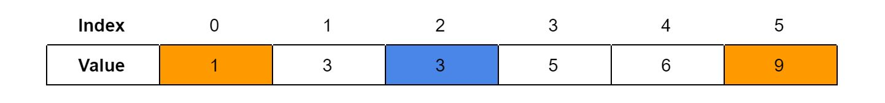

A much faster, though harder to understand method of searching an array.
public int binarySearch(int [] array, int value) {
int left = 0; //left end of range
int right = array.length-1; //right end of range
while (left<=right) {
int middle = (left+right)/2;
if (array[middle]==target) { //found the number
return middle;
}
else if (array[middle]<value) { //if the middle value is less than the target
left = middle+1; //nothing to the left of the middle will be equal to the target.
}
else if (array[middle]>value) { //if the middle value is gerater than the target
right = middle-1; //nothing to the right of the middle will be equal to the target.
}
}
return -1; //if not found, return this
}
Binary search is another way to find a value, but it only works if the array is sorted. The sort works by continually halving the range it checks, until either the exact value is found or no value is found. Given a value to search in the array, the search would check the value at the middle index of the range (if there are two “middle values”, either would do). This works since binary search works on the assumption that the values are sorted. If that value is smaller than the desired value, the range is reduced to be the right half of the array, since, if the current value is smaller, all the values before it are definitely smaller, hence why they don’t need to be checked. If that value is greater, the range is reduced to be the left half of the array, since all the numbers after the current index are definitely bigger and don’t need to be compared. The comparison of the values is why sorting the array is important. Eventually, either the middle index would be the value that is being searched, so that index would be returned, or the range will be reduced to nothing, meaning the value is not found in the array and -1 has to be returned. We can use the serted version of the array from the example in sequential sort to demonstrate binary sort:
If we use binary search to search for 6, we would perform the following operations:
Our range is currently the entire array, as indicated by the two orange squares indicating the start and end point of the range. We are currently checking the middle index of 2, which contains a value of 3. We find that 6 is greater than 3, so we can reduce the range only considering the right half.
The updated range is half of the original array. The middle index is now 4, which contains a value of 6. We find that 6 is the same as the value we’re looking for, so our search returns 4.
Now let’s try finding a number that is not in the array. If we use binary search to search for 2, we would perform the following operations:
The updated range is half of the original array. Since the range is small, the middle index is also the ending index, 0, which contains a value of 1. We find that 1 is too small, so we must decrease the range again.
Now, the starting and ending index is at 3, thus the middle index is also at 3. We find that the value at index 1 is still not 2, but we can no longer decrease the range. Thus, we find that the value is not in the array.
Now, the starting and ending index is at 3, thus the middle index is also at 3. We find that the value at index 1 is still not 2, but we can no longer decrease the range. Thus, we find that the value is not in the array.
Note that since the searching range halves each time, the algorithm would take around O(log(N)) time. This means that it would take the number of times 2 can divide N to search the array.
created with
Nicepage .